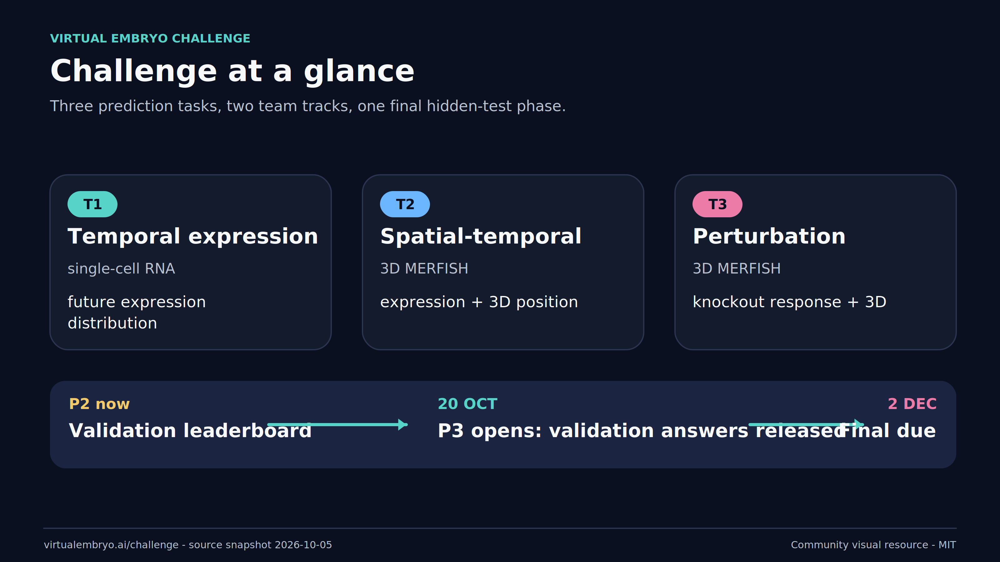
01 challenge at a glance
Open any image for a full-resolution PNG. Editable SVG and individual PDF source assets are in the repository. Scientific/rules claims are tied to a dated official-source snapshot.

01 challenge at a glance
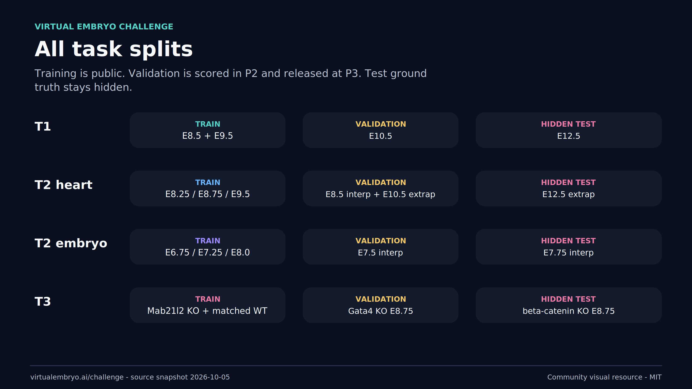
02 all task splits
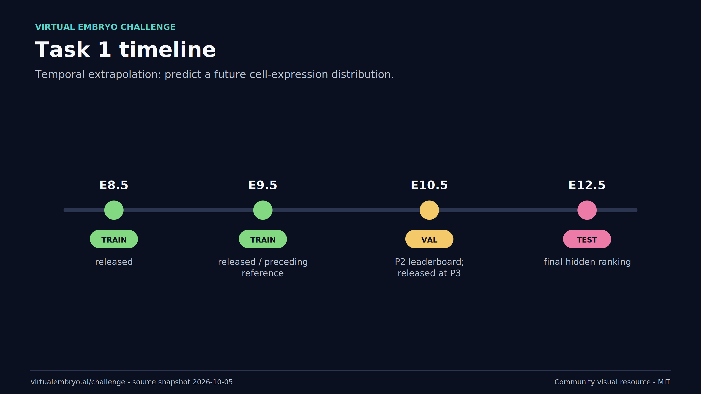
03 t1 timeline
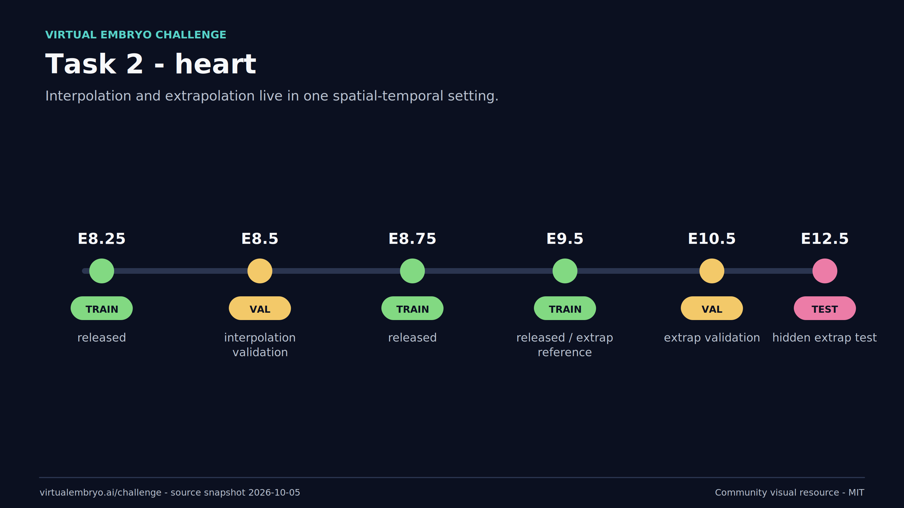
04 t2 heart timeline
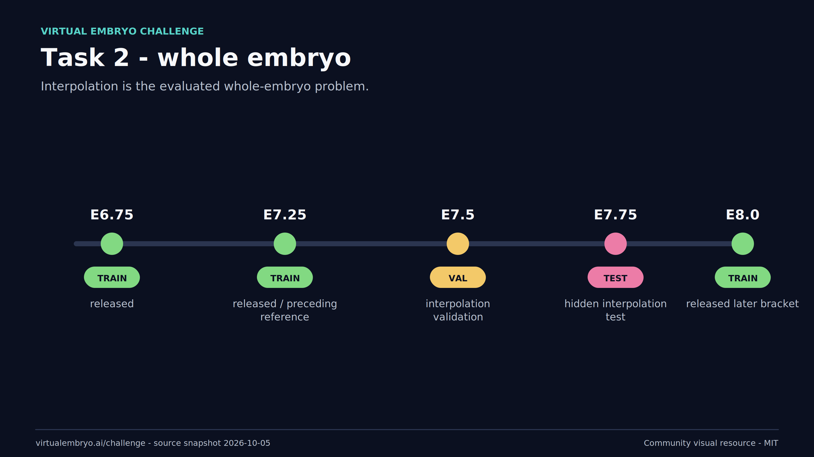
05 t2 embryo timeline
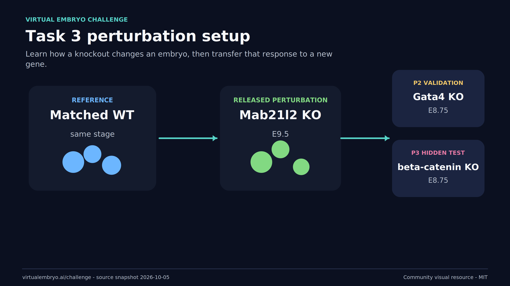
06 t3 perturbation setup
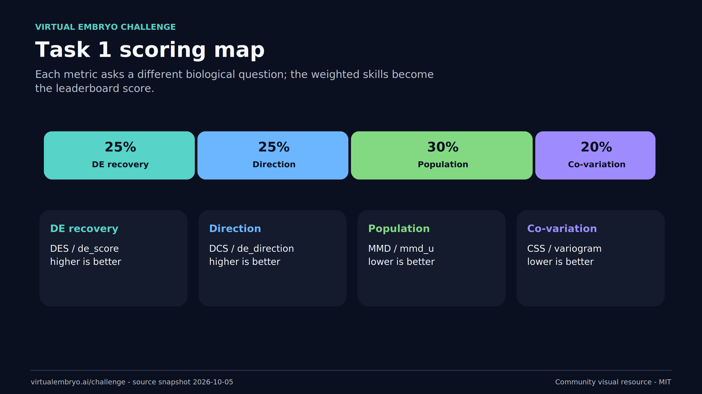
07 t1 score map
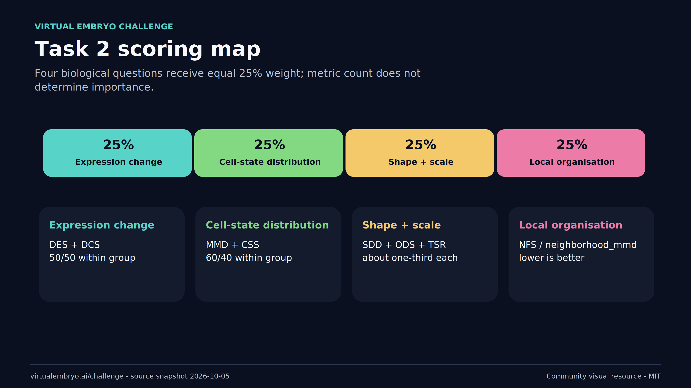
08 t2 score map
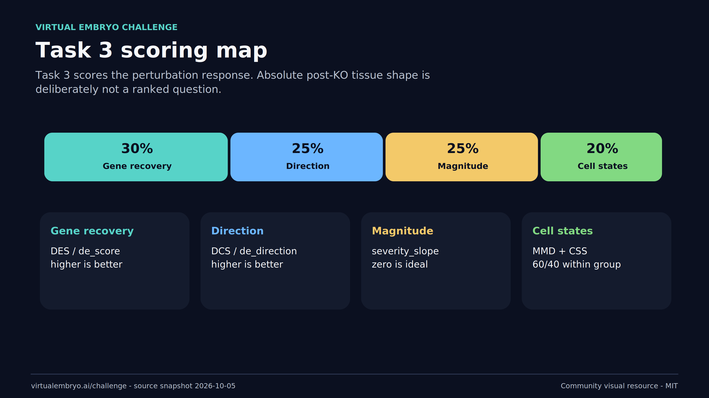
09 t3 score map
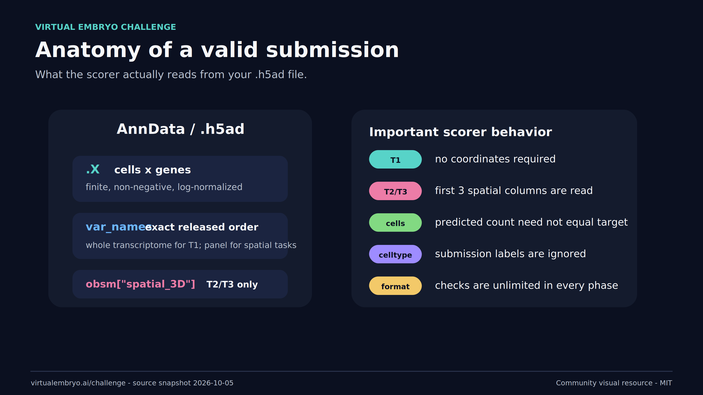
10 h5ad submission anatomy
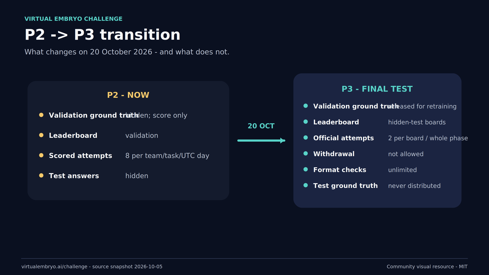
11 p2 to p3 transition
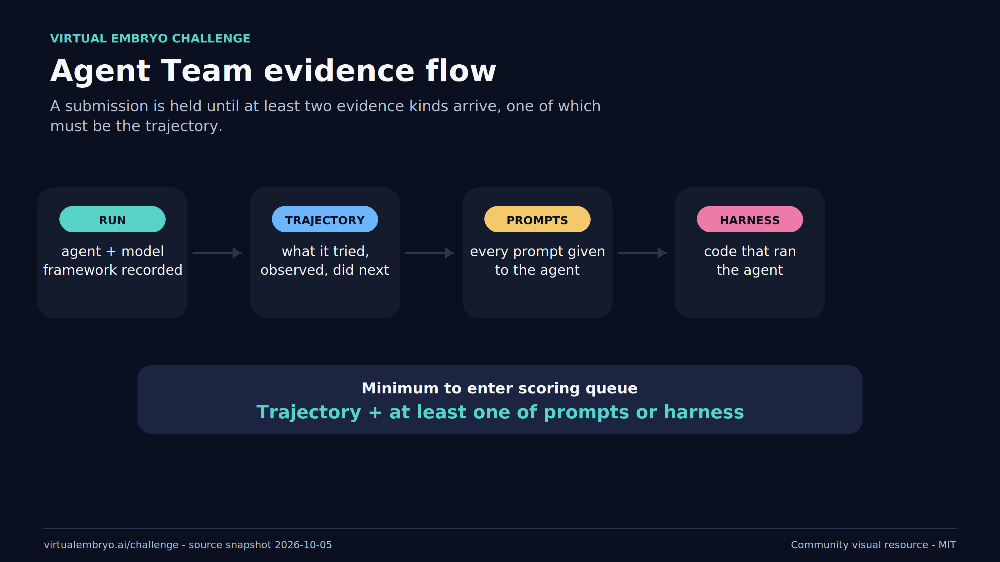
12 agent evidence flow